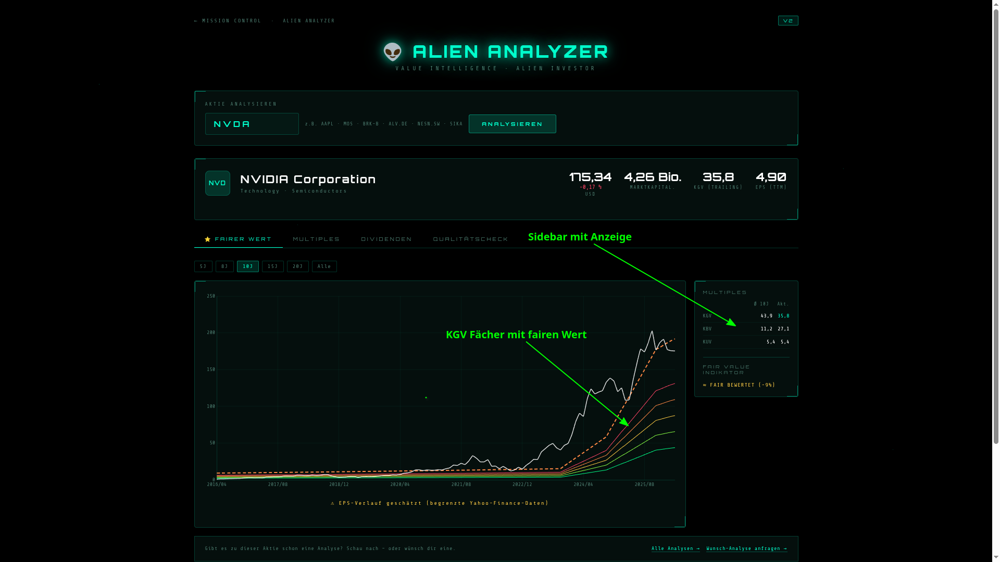
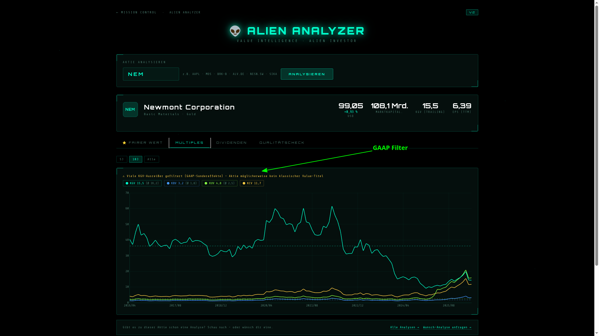
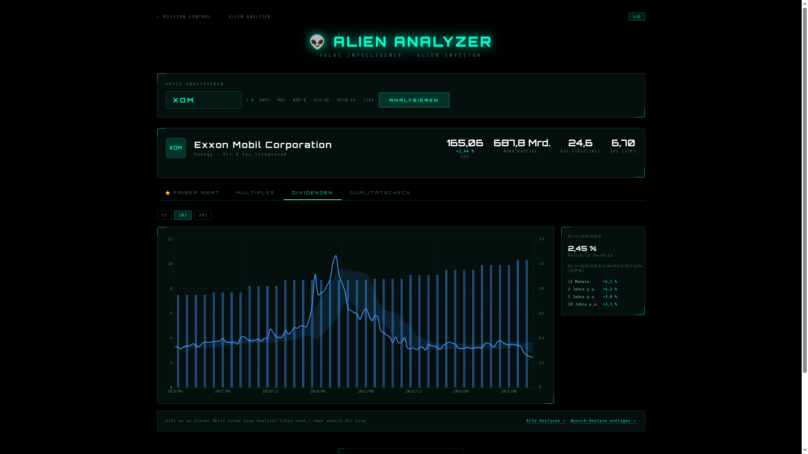
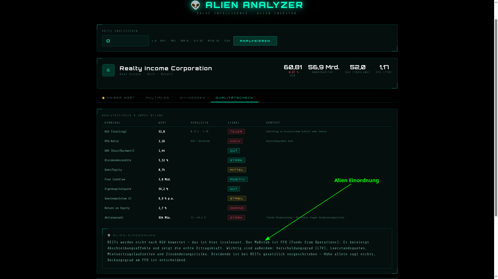

Kein Bloomberg-Terminal, kein teures Abo, kein Login. Der Alien Analyzer V2 ist ein browserbasiertes Value-Investing-Tool – kostenlos, direkt auf alien-investor.org. Ticker eingeben, Enter – und du bekommst in Sekunden eine strukturierte Übersicht über Bewertung, Kennzahlen und Qualität einer Aktie.
Die Daten kommen von Yahoo Finance über einen eigenen Proxy. Kein API-Key erforderlich. Das Tool läuft komplett im Browser – eine einzige HTML-Datei, kein Framework, kein Build-Step. Hier ist, was die vier Tabs zeigen.
Tab 1 – Fairer Wert

Der wichtigste Tab für Value-Investoren. Du siehst den historischen Kursverlauf – und darüber einen KGV-Fächer: mehrere Linien, berechnet aus dem EPS-Verlauf multipliziert mit verschiedenen historischen KGV-Niveaus (unteres, mittleres, oberes Perzentil).
Liegt der aktuelle Kurs deutlich über dem Fächer? Historisch teuer. Liegt er darunter oder am unteren Rand? Potenzielle Unterbewertung. Die Sidebar liefert dir direkt den Fair-Value-Indikator als kompaktes Urteil.

NVIDIA im Fairer-Wert-Tab – KGV-Fächer zeigt historische Bewertungskorridore
Tab 2 – Multiples

Ein einzelner Stichtagswert sagt wenig. Entscheidend ist, wie er sich zur eigenen Geschichte verhält. Tab 2 zeigt KGV, KCV, KUV und KBV historisch als Linien – über bis zu 20 Jahre.
So erkennst du auf einen Blick, ob das aktuelle Niveau historisch hoch oder moderat ist. Ein GAAP-Filter markiert Ausreißer durch Sondereffekte – damit einmalige Abschreibungen das Bild nicht verzerren.

Newmont im Multiples-Tab – KGV, KBV, KUV und KCV im historischen Verlauf
Tab 3 – Dividenden

Für Dividendeninvestoren der relevanteste Tab. Die Dividendenrendite wird historisch als Balkendiagramm dargestellt, ergänzt um eine geglättete Rendite-Linie und einen farblich markierten Rendite-Korridor – der zeigt, wo die Rendite historisch als attraktiv oder überteuert galt.
Die Sidebar ergänzt das Dividendenwachstum (DPS) über 12 Monate, 2, 5 und 10 Jahre. So siehst du nicht nur die aktuelle Rendite, sondern ob das Unternehmen sie auch konsistent wachsen lässt.

Exxon Mobil im Dividenden-Tab – Rendite-Verlauf und Dividendenwachstum
Tab 4 – Qualitätscheck & Alien-Einordnung

Zahlen allein reichen nicht. Tab 4 sortiert die wichtigsten Fundamentaldaten in eine Ampeltabelle: ROE, Margen, Debt/Equity, Free Cashflow, Eigenkapitalquote, Gewinnwachstum, Aktienrückkäufe – jede Kennzahl mit einem klaren Signal: GUT, STARK, TEUER, HOCH, GERING oder STABIL.
Am Ende des Tabs erscheint die Alien-Einordnung – ein automatisch generierter Freitext-Kommentar, der Besonderheiten der jeweiligen Aktie erklärt. Bei einem REIT zum Beispiel: warum KGV hier irrelevant ist und FFO der entscheidende Maßstab. Bei einem Rohstoffunternehmen: warum zyklische Gewinneinbrüche die Multiples strukturell verzerren. Das Tool erkennt solche Sonderfälle und gibt Kontext statt nackter Zahlen.

Realty Income im Qualitätscheck – Ampeltabelle und Alien-Einordnung
Fazit
Der Alien Analyzer V2 ist kein Ersatz für eigene Recherche und kein Handelssignal. Er ist ein Scan-Tool – schnell, kostenlos, ohne Registrierung. Ticker eingeben, vier Tabs durchklicken: du hast mehr Kontext als die meisten Privatanleger, die sich nur den aktuellen Kurs anschauen.
Welche Aktien werden unterstützt? Grundsätzlich alles mit einem Yahoo-Finance-Ticker –
also US-Aktien, deutsche Titel (z.B. ALV.DE), Schweizer Titel (NESN.SW)
und viele weitere internationale Werte.
Vertraue niemandem – manage deine Finanzen selbst.
Das Tool ist kostenlos und direkt im Browser nutzbar – kein Login, kein Abo:
Zum Alien Analyzer V2 →